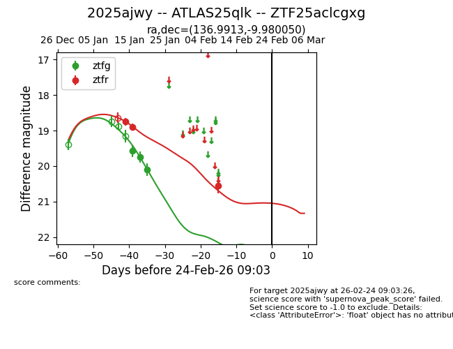
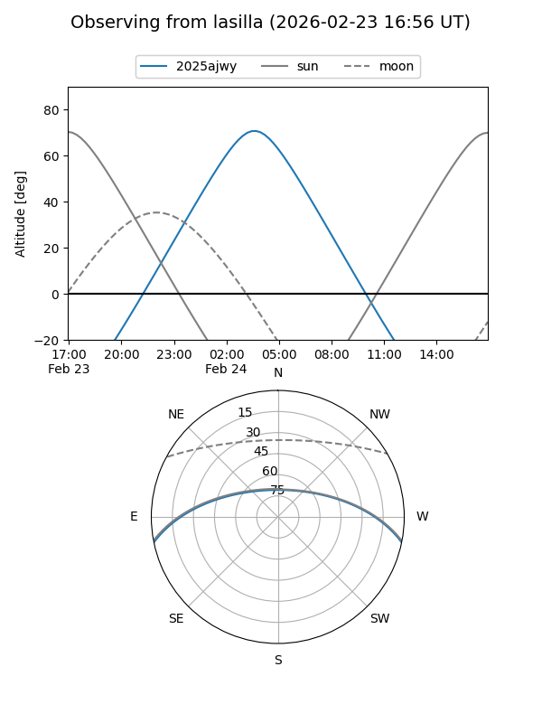
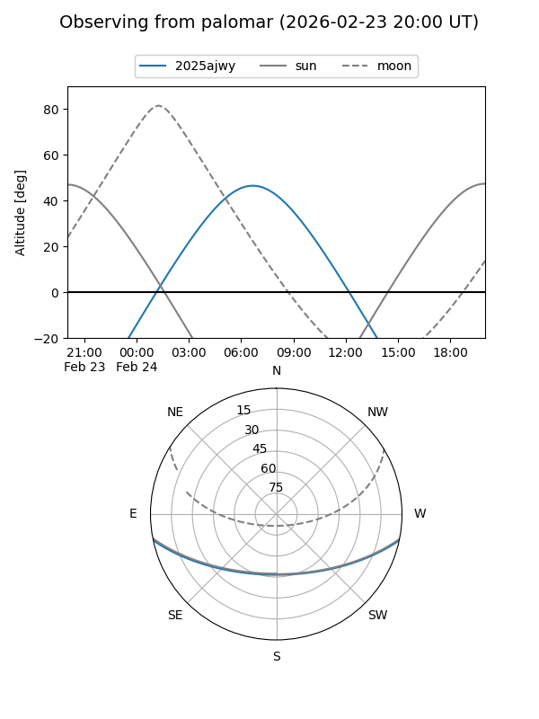
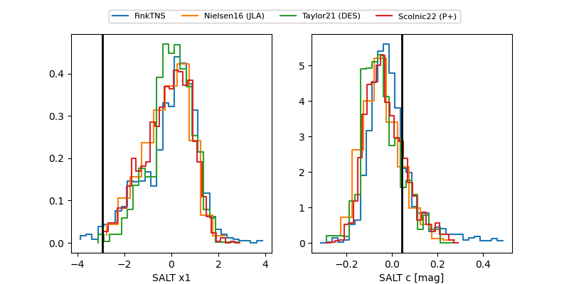

2025ajwy
Target 2025ajwy at 2026-01-21 22:41
Aliases and brokers:
FINK: link
Lasair: link
ALeRCE: link
TNS: link
YSE: link
alt names
ZTF25aclcgxg (ztf,fink_ztf)
2025ajwy (tns,yse)
ATLAS25qlk (atlas)
Coordinates:
equatorial (ra, dec) = 136.9913,-9.98005
equatorial (HMS+DMS) = 09:07:57.90,-09:58:48.18
galactic (l, b) = (239.4187,+24.38022)
Flags:
Photometry:
last ztfg=19.75, ztfr=18.90
2 ztfg, 2 ztfr detections
Lightcurve

Visibility


Additional plots
